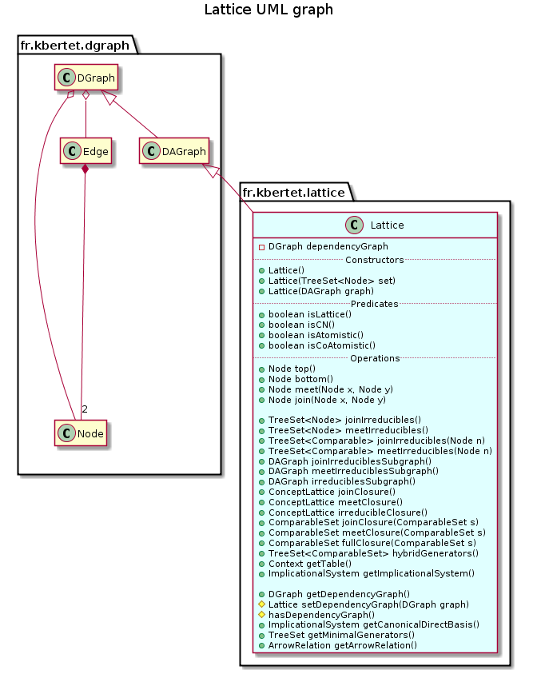

public class Lattice extends DAGraph
This class extends class DAGraph to provide specific methods to manipulate a lattice.
A lattice is a directed acyclic graph (DAGraph) containing particular nodes denoted join and meet\ (a dag is a lattice if and only if each pair of nodes admits a join and a meet).
Since checking the lattice property is very time-expensive, this property is not ensured for components of this class. However, it can be explicitely ckecked using method isLattice().
This class provides methods implementing classical operation on a lattice issued from join and meet operation and irreducibles elements, and methods that returns a condensed representation of a lattice.
A well-known condensed representation of a lattice is its table, obtained by method getTable(), where join-irreducibles are in column and meet-irreducibles are in rown.
Another condensed representation is its dependency graph obtained by method getDependencyGraph().
The dependency graph is a directed graph where nodes are join-irreducibles, edges corresponds to the dependency relation between two join-irreducibles and are valuated by a family of subsets of irreducibles.
The dependency graph encodes two other condensed representation of a lattice that are its minimal generators and its canonical direct basis that can be obtained from the dependency graph by methods getMinimalGenerators() and getCanonicalDirectBasis().

remove useless comments: Karell
| Constructor and Description |
|---|
Lattice()
Constructs this component with an empty set of nodes.
|
Lattice(DAGraph graph)
Constructs this component as a copy of the specified lattice.
|
Lattice(TreeSet<Node> set)
Constructs this component with the specified set of nodes, and empty treemap of successors and predecessors.
|
| Modifier and Type | Method and Description |
|---|---|
Node |
bottom()
Returns the bottom of the lattice.
|
ComparableSet |
fullClosure(ComparableSet s)
Returns the smallest sublattice of this component containing s.
|
ArrowRelation |
getArrowRelation()
The arrowRelation method encodes arrow relations between meet & join-irreductibles of this component.
|
ImplicationalSystem |
getCanonicalDirectBasis()
Returns the canonical direct basis of the lattice.
|
DGraph |
getDependencyGraph()
Returns the dependency graph of this component.
|
ImplicationalSystem |
getImplicationalSystem()
Returns an ImplicationalSystem of the lattice defined on the join irreducibles nodes.
|
TreeSet |
getMinimalGenerators()
Returns the minimal generators of the lattice.
|
Context |
getTable()
Returns the table of the lattice, composed of the join and meet irreducibles nodes.
|
protected boolean |
hasDependencyGraph()
Test if this component has a dependency graph.
|
TreeSet<ComparableSet> |
hybridGenerators()
Returns the list of all sets of nodes that generates all nodes.
|
ConceptLattice |
irreducibleClosure()
Generates and returns the isomorphic concept lattice defined on the join and meet irreducibles sets.
|
DAGraph |
irreduciblesSubgraph()
Returns the subgraph induced by the irreducibles nodes of this component.
|
boolean |
isAtomistic()
Returns true if this component is an atomistic lattice.
|
boolean |
isCN()
Return true if this component is congruence normal.
|
boolean |
isCoAtomistic()
Returns true if this component is an coatomistic lattice.
|
boolean |
isLattice()
Check if this component is a lattice.
|
Node |
join(Node x,
Node y)
Returns the join of the two specified nodes if it exists.
|
ConceptLattice |
joinClosure()
Generates and returns the isomorphic closed set lattice defined on the join irreducibles set.
|
ComparableSet |
joinClosure(ComparableSet s)
Returns the smallest set of nodes of this component containing S such that if a,b in JS then join(a,b) in JS.
|
TreeSet<Node> |
joinIrreducibles()
Returns the set of join irreducibles of this component.
|
TreeSet<Comparable> |
joinIrreducibles(Node n)
Returns the set of join-irreducibles that are minorants of the specified node.
|
DAGraph |
joinIrreduciblesSubgraph()
Returns the subgraph induced by the join irreducibles nodes of this component.
|
Node |
meet(Node x,
Node y)
Returns the meet of the two specified nodes if it exists.
|
ConceptLattice |
meetClosure()
Generates and returns the isomorphic closed set lattice defined on the meet irreducibles set.
|
ComparableSet |
meetClosure(ComparableSet s)
Returns the smallest set of nodes of this component containing S such that if a,b in MS then meet(a,b) in MS.
|
TreeSet<Node> |
meetIrreducibles()
Returns the set of meet irreducibles of this component.
|
TreeSet<Comparable> |
meetIrreducibles(Node n)
Returns the set of meet-irreducibles thar are majorants of the specified node.
|
DAGraph |
meetIrreduciblesSubgraph()
Returns the subgraph induced by the meet irreducibles nodes of this component.
|
protected Lattice |
setDependencyGraph(DGraph graph)
Set the dependency graph.
|
Node |
top()
Returns the top of the lattice.
|
divisors, filter, getSubgraphByNodes, ideal, majorants, max, min, minorants, random, random, transitiveClosure, transitiveReductionaddEdge, addEdge, addEdge, addNode, clone, complementary, containsEdge, containsEdge, containsNode, getEdge, getEdges, getNode, getNodeByContent, getNodeByIdentifier, getNodes, getPredecessorEdges, getPredecessorNodes, getPredecessors, getSinks, getStronglyConnectedComponent, getSubgraphByEdges, getSuccessorEdges, getSuccessorNodes, getSuccessors, getWells, isAcyclic, reflexiveClosure, reflexiveReduction, removeEdge, removeEdge, removeNode, removeNodes, save, setNodes, setPredecessors, setSuccessors, sizeEdges, sizeNodes, topologicalSort, toString, transposepublic Lattice()
Constructs this component with an empty set of nodes.
public Lattice(TreeSet<Node> set)
Constructs this component with the specified set of nodes, and empty treemap of successors and predecessors.
set - the set of nodespublic Lattice(DAGraph graph)
Constructs this component as a copy of the specified lattice.
Lattice property is checked for the specified lattice.
When not verified, this component is construct with an empty set of nodes.
graph - the Lattice to be copiedpublic boolean isLattice()
Check if this component is a lattice.
There exists several caracterizations of a lattice. The characterization implemented is the following: A lattice is a DAG if there exists a meet for each pair of node, and a unique maximal node.
This treatment is performed in O(n^3), where n is the number of nodes.
public boolean isCN()
Return true if this component is congruence normal.
A lattice $L$ is in class CN (Congruence Normal) is there exists a sequence $L_1,\ldots,L_p$ of lattices with $L_p=L$, together with a sequence $C1,\ldots,C{p-1}$ such that $C_i$ is a convex of $Li$ and $L{i+1}$ is obtained by doubling the convex $C_i$ in $L_i$.
See LatticeFactory for the doubling convex method which is not used here.
This computation is done in O((|J|+|M|)^2|X|) from the transitive reduction of L.
This recognition algorithm was first written in : “Doubling convex serts in lattices : characterizations and recognition algorithm”, Bertet K., Caspard N. 2002.
public boolean isAtomistic()
Returns true if this component is an atomistic lattice.
A lattice is atomistic if its join irreductibles are atoms (e.g. successors of bottom)
public boolean isCoAtomistic()
Returns true if this component is an coatomistic lattice.
A lattice is coatomistic if its mett irreductibles are coatoms (e.g. predecessors of top)
public Node top()
Returns the top of the lattice.
public Node bottom()
Returns the bottom of the lattice.
public Node meet(Node x, Node y)
Returns the meet of the two specified nodes if it exists.
x - the first nodey - the second nodepublic Node join(Node x, Node y)
Returns the join of the two specified nodes if it exists.
x - the first nodey - the second nodepublic TreeSet<Node> joinIrreducibles()
Returns the set of join irreducibles of this component.
Join irreducibles are nodes with an unique immediate predecessor in the transitive and reflexive reduction. This component is first reduced reflexively and transitively.
public TreeSet<Node> meetIrreducibles()
Returns the set of meet irreducibles of this component.
Meet irreducibles are nodes with an unique immediate successor in the transitiv and reflexiv reduction. This component is first reduced reflexively and transitively.
public TreeSet<Comparable> joinIrreducibles(Node n)
Returns the set of join-irreducibles that are minorants of the specified node.
n - a specified nodepublic TreeSet<Comparable> meetIrreducibles(Node n)
Returns the set of meet-irreducibles thar are majorants of the specified node.
n - a specified nodepublic DAGraph joinIrreduciblesSubgraph()
Returns the subgraph induced by the join irreducibles nodes of this component.
public DAGraph meetIrreduciblesSubgraph()
Returns the subgraph induced by the meet irreducibles nodes of this component.
public DAGraph irreduciblesSubgraph()
Returns the subgraph induced by the irreducibles nodes of this component.
public ConceptLattice joinClosure()
Generates and returns the isomorphic closed set lattice defined on the join irreducibles set.
Each node of this component is replaced by a node containing its join irreducibles predecessors stored in a closed set.
public ConceptLattice meetClosure()
Generates and returns the isomorphic closed set lattice defined on the meet irreducibles set.
Each node of this component is replaced by a node containing its meet irreducibles successors stored in a closed set.
public ConceptLattice irreducibleClosure()
Generates and returns the isomorphic concept lattice defined on the join and meet irreducibles sets.
Each node of this component is replaced by a node containing its meet irreducibles successors and its join irreducibles predecessors stored in a concept.
public ComparableSet joinClosure(ComparableSet s)
Returns the smallest set of nodes of this component containing S such that if a,b in JS then join(a,b) in JS.
s - set of nodes to be closedpublic ComparableSet meetClosure(ComparableSet s)
Returns the smallest set of nodes of this component containing S such that if a,b in MS then meet(a,b) in MS.
s - set of nodes to be closedpublic ComparableSet fullClosure(ComparableSet s)
Returns the smallest sublattice of this component containing s.
s - set of nodes to be closed.public TreeSet<ComparableSet> hybridGenerators()
Returns the list of all sets of nodes that generates all nodes. Both join and meet operations are allowed and the sets are minimal for inclusion.
public Context getTable()
Returns the table of the lattice, composed of the join and meet irreducibles nodes.
Each attribute of the table is a copy of a join irreducibles node. Each observation of the table is a copy of a meet irreducibles node. An attribute is extent of an observation when its join irreducible node is greater than the meet irreducible node in the lattice.
public ImplicationalSystem getImplicationalSystem()
Returns an ImplicationalSystem of the lattice defined on the join irreducibles nodes.
Each element of the ImplicationalSystem is a copy of a join irreducible node.
public DGraph getDependencyGraph()
Returns the dependency graph of this component.
The dependency graph is a condensed representation of a lattice that encodes its minimal generators, and its canonical direct basis.
In the dependency graph, nodes are join irreducibles, egdes correspond to the dependency relation between join-irreducibles (j -> j’ if and only if there exists a node x in the lattice such that x not greather than j and j’, and x v j’ > j), and edges are labeled with the smallest subsets X of join-irreducibles such that the join of elements of X corresponds to the node x of the lattice.
The dependency graph could has been already computed in the case where this component has been instancied as the diagramm of the closed set lattice of a closure system using the static method ConceptLattice.diagramLattice(fr.kbertet.lattice.ClosureSystem) This method implements an adaptation adaptation of Bordat’s where the dependency graph is computed while the lattice is generated.
However, it is generated in O(nj^3) where n is the number of nodes of the lattice, and j is the number of join-irreducibles of the lattice.
protected Lattice setDependencyGraph(DGraph graph)
Set the dependency graph.
graph - the dependency graphprotected boolean hasDependencyGraph()
Test if this component has a dependency graph.
public ImplicationalSystem getCanonicalDirectBasis()
Returns the canonical direct basis of the lattice.
The canonical direct basis is a condensed representation of a lattice encoding by the dependency graph.
This canonical direct basis is deduced from the dependency graph of the lattice: for each edge b -> a valuated by a subset X, the rule a+X->b is a rule of the canonical direct basis.
If not yet exists, the dependency graph of this component has to be generated by method getDependencyGraph().
public TreeSet getMinimalGenerators()
Returns the minimal generators of the lattice.
Minimal generators a condensed representation of a lattice encoding by the dependency graph.
Minimal generators are premises of the canonical direct basis. that is deduced from the dependency graph of the lattice.
If not yet exists, the dependency graph of this component has to be generated by method getDependencyGraph().
public ArrowRelation getArrowRelation()
The arrowRelation method encodes arrow relations between meet & join-irreductibles of this component.
Let m and j be respectively meet and join irreductibles of a lattice. Recall that m has a unique successor say m+ and j has a unique predecessor say j-, then :
Copyright © 2010–2014 Karell Bertet. All rights reserved.